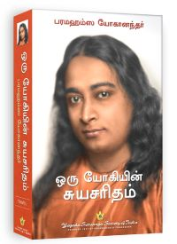
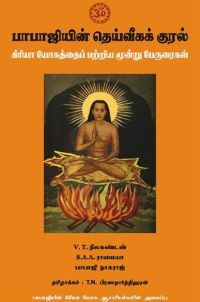

வரவேற்பு மாலை - 2 !
கலிபுருஷனை பற்றி வள்ளலார் கூறியது:
கலியுகத்தின் தாத்பர்யம்:- முதல் யுகத்துக்கு நாள் 8, இரண்டாவது யுகத்துக்கு நாள் 6, மூன்றாவது யுகத்துக்கு நாள் 4, நாலாவது யுகத்துக்கு நாள் 2, ஒரு தினத்திற்கு நாழிகை 60, நிமிஷம் 2,16,000. இரண்டு நாளைக்கு 4,32,000 நிமிஷம். இவ்வண்ணமே 4,6,8, முதலியவற்றிற்கும் கொள்க. ஆக நாள் 20-க்கு நிமிஷம் 43,20,000. இதைக் குழுக்குறியில் வருஷமாகச் சொன்னது. முதல் யுகம் களங்க மார்க்கம்; இரண்டாவது யுகம் திராவக மார்க்கம்; மூன்றாவது யுகம் நவநீத மார்க்கம்; நாலாவது யுகம் பஸ்ம மார்க்கம். ஆதலால், மேற்குறித்த பஸ்மத்தை மேற்குறித்த வருஷத்தில் முடித்து உட்கொண்ட புருஷனாகிய சித்தனுக்குக் கலிபுருஷனென்னு நாமம் வந்தது. மேற்படி பஸ்மத்தை இரண்டு தினத்தில் முடித்து கற்பங்கொண்டு தேகசித்தியைப்பெற்றுத் திரிசியப்படாமல், மேற்படி புருஷன் தனது சங்கல்ப விகல்பங்களால் இவ்வுலகத்தைத் தோன்றலாதி அசைவுகள் செய்வித்து ஆடுகின்றான். இந்தவுலகம் முடிவதற்கு இன்னும் 27 வருடம் இருக்கின்றது: இதற்குமேல் மேல் புருஷன் செயல் நடவாது; ஞான சித்தன் செயல் உண்டாம். ஆங்கிரச வருடம் புரட்டாசி மாதம் 3ஆம் நாள்.
முதல் யுகத்திற்கு நாள் 8. 2-வது யுகத்திற்கு நாள் 6. 3-வது யுகத்திற்கு நாள் 4. 4-வது யுகத்திற்கு நாள் 2. ஆகக் கூடிய நாள் 20-ம் கற்பம் முடிக்கக் கூடும் நாட்கள். 60X60X60=2,16,000 நொடி ஒரு நாள். அதாவது நாள் ஒன்றுக்கு நாழிகை 60, நாழிகை ஒன்றுக்கு வினாடி 60, வினாடி ஒன்றுக்கு நொடி 60 என்றபடி. நாளிரண்டிற்கு 4,32,000 நொடி. இந்த 4,32,000 நொடியும் அத்தனை வருடமாகக் கலியுகத்திற்குச் சொல்லியிருக்கிறது. ஆனால் இந்தக் கலியுகத்திற்கு வருடம் ஐயாயிரந்தான்.இந்தக் கலியுகம் முடிவதற்கு இன்னம் இருபத்தேழு வருடமிருக்கிறது. இந்த ஐயாயிர வருஷமும் ஜீவித்திருக்கும்படி, கலியுகத்திற்குக் குறித்த நாளிரண்டில் கல்பஞ் செய்து தேகசித்தியைப் பெற்றுக்கொண்டு, நம்முடைய கண்ணுக்குத் தோற்றாமல் வேறு வடிவத்தோடு இருக்கிறவன் கலியுக புருஷன். இவனுடைய சங்கல்ப விகற்பங்களால் இந்த உலகம் இப்போ தசைவு பெற்றிருக்கின்றது.இந்த உலகம் சன்மார்க்க உலகமாக மாறுவதற் கின்னும் பன்னிரண்டு மாதமிருக்கிறது. ஆங்கீரச வருஷம் புரட்டாசி மாதம் 3 ஆம் நாள்.
வள்ளலார் கூறுகின்ற கலி புருஷன் யார்?
இதற்கான பதிலை நாம் மகா அவதார் பாபாஜி பற்றி வெளிவந்துள்ள புத்தகங்கள் 📚 மூலமாக கலி புருஷன் என்பவன் யார் என்பதை ஆதாருங்களுடன் பார்க்கலாம்.




பாபாஜியுடன் என் முதல் சந்திப்பு என் முப்பத்து மூன்றாவது வயதில் நிகழ்ந்தது, " லாஹிரி மகாசயர் கூறினார். “1861 ஆம் வருட இலையுதிர் காலத்தில் நான் தானாப்பூரில் அரசாங்க ராணுவப் பொறியியல் இலாகாவில் கணக்கராகப் பதவியில் இருந்தேன். ஒரு நாள் காலை அலுவலக மேலாளர் என்னை அழைத்தார்.
ஒரு யோகியின் சுயசரிதம்
பத்ரிநாராயணுக்கருகில் வடக்கு இமயமலையின் செங்குத்தானப் பாறைகள் லாஹிரி மகாசயரின் குருவான பாபாஜி வாழும் பேற்றை இன்னும் பெற்றிருக்கின்றன. தனிமையில் வாழும் அந்த மகான் தன் ஸ்தூல ரூபத்தைப் பல நூற்றாண்டுகளாக, ஒருக்கால் பல்லாயிரம் ஆண்டுகளாகவோ வைத்துக் கொண்டிருக்கிறார். மரணமற்ற பாபாஜி ஓர் அவதாரமாவார். இந்த சமஸ்கிருதச் சொல் "இறங்கிவருதல்" எனப் பொருள்படும் அதன் மூலச் சொற்கள் அவ, "கீழே" த்ரி, "செல்லுதல்." இந்து சமய நூல்களில் அவதாரம் எனில் தெய்வம் தேகத்தைத் தாங்கி இறங்கிவருதல் என்பதாம்
ஒரு யோகியின் சுயசரிதம்
வள்ளலார் சுத்த சன்மார்க்கத்தை 1865 ஆம் ஆண்டில் நிறுவுகிறார் . சுத்த சன்மார்க்கத்தை இந்த உலகிற்கு அளித்த சிதம்பர ராமலிங்கம் என்னும் வள்ளலார் சுத்த சன்மார்க்கம் மட்டுமே மரணமில்லா பெருவாழ்வுக்கு இட்டுச் செல்லும் என்றும் இதை அருட்பெருஞ்ஜோதி ஆண்டவர் அறிவித்தார் என்பதையும் நமக்கு திருவருட்பா பாடல்களில் பல இடங்களில் பதிவு செய்கிறார். சன்மார்க்கத்தின் முக்கிய சாதனங்கள் என்னவென்றால் எவ் உயிரையும் தம்முயிர் போல் எண்ணுவது மற்றும் சத்விசாரம் பரபகாரம் மூலமாகத்தான் மரணமில்லா பெருவாழ்வை அடைய முடியும் என்று வள்ளலார் கூறியுள்ளார்.
“ உலகில் உள்ள உயிர்கள் எல்லாம் ஒளிநெறி பெற்றிட இலகும் ஐந்தொழிலையும் யான் செய்ய தந்தனை ” என்ற பாடலின் மூலமாக அருட்பெருஞ்ஜோதி ஆண்டவர் வள்ளலாருக்கு ஐந்தொழில் செய்து இந்த உலகில் உள்ள உயிர்கள் அனைத்தையும் சுத்த சன்மார்க்க நெறிக்கு மாற்ற முழு சுதந்திரத்தை தமக்கு அளித்ததாக கூறியுள்ளார்.
இவ்வாறு உலகம் மாறிக் கொண்டிருக்க ....
திடீரென்று கிரியா யோகம் என்ற கலை பூமியில் ஏன் வந்தது ?
கிரியா யோகம் செய்த பரமஹம்ஸ யோகானந்தர், லஹரி மகாசியா, யுத்தேஸ்வர் கிரி இவர்களின் நிலை இறுதியில் என்ன ஆனது ?
இவர்கள் இறுதியில் சமாதிக்கு சென்றார்கள். சமாதிக்கு சென்ற பிறகு தனது ஆன்மாவை சுக்கும உலகத்திற்கு எடுத்துச் சென்றார்கள். சூக்கம உலகங்களில் இவர்கள் வாழ்ந்து கொண்டு உள்ளார்கள். இதைப் பற்றி யுகேஸ்வர் கிரி பரமஹம்ஸ யோகானந்தருக்கு பின்வருமாறு கூறியுள்ளார்.
அதே போல் நான் ஒரு சூட்சும லோகத்தில் உள்ளவர்களுக்கு ஒரு காப்பாளன் போன்று உதவ இறைவனால் அனுப்பப்பட்டிருக்கிறேன்," ஸ்ரீ யுக்தேஸ்வர் விளக்கினார். "அது ஹிரண்ய லோகம் அல்லது 'ஒளிமயமான சூட்சும கிரகம்' எனப்படும். நான் அங்கு முன்னேறியவர்களுக்கு, அவர்கள் சூட்சும கர்மவினை களிலிருந்து விடுபட்டு அதனால் சூட்சும உலக மறுபிறப்புக்களிலிருந்து முக்தியடைவதற்கு உதவி செய்து கொண்டிருக்கிறேன். ஹிரண்ய லோகத்தில் வசிப்பவர்கள் ஆன்மீகத்தில் மிகவும் வளர்ச்சி பெற்ற வர்களாவர்; அவர்கள் அனைவருமே பூமியில் மரண காலத்தில் தங்கள் ஸ்தூல உடல்களை உணர்வுடனேயே விட்டுவிட்டவர்கள்; தியானத் தினால் உண்டாகும் இந்த சக்தியை அவர்கள் தங்கள் கடைசி பிறவி யில் கைவரப் பெற்றவராவர்
ஒரு யோகியின் சுயசரிதம்
மனித உடல் இருந்தால் தான் சுத்த பிரணவ ஞான தேகத்தை அடைய முடியும் என்று வள்ளலார் கூறுகிறார். இதுவே முழுமையான நிலை என்றும் கூறியுள்ளார். இவ்வாறு இருக்க நாம் ஏன் சமாதிக்குச் சென்று ஆன்மாவை இந்த உடலில் இருந்து சுக்கும உலகத்திற்கு எடுத்துச் சென்று அங்கே ஏன் நாம் வாழ வேண்டும். இது இறுதியான நிலையும் இல்லை. சுக்கும உலகங்களில் வாழ்வது இறுதியான நிலை இல்லை. இவ்வாறு இருக்க இதை என் பாபாஜி போதித்தார் ?
மேலும் பரமஹம்ஸ யோகானந்தருக்கு பாபாஜி இறைவன் இல்லை என்பது முன்பிருந்தே தெரியும். பாபாஜி பரமஹம்ச யோகானந்தரை 1920ஆம் ஆண்டு அமெரிக்காவுக்கு சென்று கிரியா யோகத்தை போதிக்குமாறு கூறுவார். யோகக் கலையை அமெரிக்காவில் உள்ளவர்களுக்கு இயேசு கிறிஸ்து போதிக்க சொன்னார் என்றும் கூறுவார். பரமஹம்ச யோகானந்தரும் அமெரிக்கா செல்ல கடும் தவத்தில் அமர்ந்து இறைவனின் சம்பந்தத்திற்காக காத்துக் கொண்டிருப்பார். ஆனால் இறைவனிடம் இருந்து எந்த பதிலும் வராது. அந்த இடத்தில் திடீரென்று மகா அவதார் பாபாஜி காட்சியளித்து, இறைவன் சம்பதித்து விட்டார் நீ அமெரிக்கா செல்லலாம் என்று கூறுவார்.
ஒரு நாள் அதிகாலை நான் பிரார்த்தனை செய்யத் தொடங்கினேன். பிரார்த்தித்துக் கொண்டே இறந்தாலும் சரி, இறைவனின் குரலைக் கேட்கும் வரை தொடர்வது என்ற பிடிவாதமான தீர்மானத்துடன் இருந்தேன். நவீன பயனுள்ள செயல்வாத மயக்கத்தில் என்னையே நான் இழக்க மாட்டேன் என்பதற்கான, ஆண்டவனின் அருளாசியையும் உறுதி மொழியையும் பெற விழைந்தேன். நான் அமெரிக்கா செல்லுவதற்கு என் மனம் தயாராகிவிட்டது. ஆனால் இறைவனின் அனுமதியாகிய ஆறுதல் மொழியைக் கேட்க வேண்டுமென்ற தீர்மானம் அதை விட அதிக வலிமையுடன் இருந்தது.நான் என் விசும்பல்களை அடக்கியவாறு பிரார்த்தனை செய்து கொண்டே இருந்தேன். எந்தப் பதிலும் வரவில்லை உச்சி வேளையில் நான் பிரார்த்தனையின் உச்சியை எட்டினேன். வேதனைகளின் அழுத்தத்தினால் என் தலையே சுழன்றது. நான் இன்னும் சற்று என் உளத்துயரின் ஆழத்தை அதிகப்படுத்தினால் என் மூளை சிதறிவிடும் எனத் தோன்றியது.அந்தக் கணத்தில் கர்பார் வீதியிலிருந்த என் இல்லத்து கதவைத் தட்டும் சத்தம் கேட்டது. அவ்வழைப்புக்கிணங்கி கதவைத் திறந்த நான் ஓர் இளைஞரைத் துறவிக்குரிய குறைவான ஆடையில் கண்டேன். அவர் வீட்டிற்குள் நுழைந்தார். "அவர் பாபாஜியாகத்தான் இருக்க வேண்டும்!" என்று நான் நினைத்தேன்; திகைப்புற்றேன். ஏனெனில் என் முன்னாலிருந்த மனிதர் இளம் லாஹிரி மகாசயரின் அம்சங்களைக் கொண்டிருந்தார். அவர் என் எண்ணத்திற்குப் பதிலளித்தார். “ஆம், நான் பாபாஜிதான்" அவர் ஹிந்தியில் மிக இனிமையாகப் பேசினார். "நம் விண்ணுலகத் தந்தை உன் பிரார்த்தனையைச் செவியுற்றார். உன்னிடம் இதைக் கூறும்படி எனக்கு அவர் உத்தரவை இடுகிறார்; உன்னுடைய குருவின் கட்டளைப்படி நீ அமெரிக்கா செல்வாய், பயப்படாதே, நீ பாதுகாக்கப்படுவாய்."சிலிர்ப்படைந்த சிறிய இடைவெளிக்குப் பிறகு, பாபாஜி மறுபடிஎன்னை நோக்கிக் கூறினார். "மேலை நாடுகளில் கிரியா யோக முறைகளைப் பரப்ப நான் உன்னைத்தான் தேர்ந்தெடுத்திருக்கிறேன். வெகுகாலத்திற்கு முன் நான் உன் குரு யுக்தேஸ்வரைக் கும்பமேளாவில் சந்தித்தேன். அப்பொழுது நான் அவரிடம் பயிற்சி பெறுவதற்காக உன்னை அனுப்புவதாகக் கூறினேன்."
ஒரு யோகியின் சுயசரிதம்
இதை நாம் கொஞ்சம் கூர்ந்து ஆராய்ந்து பார்த்தால் பரமஹம்ச யோகானந்தருக்கு இறைவன் கிரியா யோகத்தை பரப்ப சம்பந்திக்கவில்லை ஆனால் பாபாஜி காட்சியளித்து இறைவன் சம்பந்தித்து விட்டார் என்று ஒரு பொய்யை கூறி, பரமஹம்ச யோகானந்தரை அமெரிக்காவிற்கு அனுப்பி கிரியா யோகத்தை பரப்புகிறார்.
நீங்கள் கேட்கலாம் பாபாஜி எவ்வாறு பொய் கூறி இருப்பார் என்று ?
1874 ஆம் ஆண்டு அருட்பெருஞ்ஜோதி
ஆண்டவர் வள்ளலாருக்கு சுத்த சன்மார்க்கத்தை உலகம் முழுவதும் பரப்ப கட்டளை இடுகிறார்.இவ்வாறு
இருக்க எப்படி 1920 ஆம் ஆண்டில் கிரியா யோகத்தை உலகம் முழுவதும் பரப்ப விண்ணுலக தந்தையான அருட்பெருஞ்ஜோதி ஆண்டவர் கூறியிருப்பார் ?
லஹிரி மஹாசயாவை புகைப்படம் எடுக்க முயன்ற போது அவரின் உருவம் புகைப்படத்தில் பதியவில்லை என்று பரமஹம்சர் யோகானந்தர் பின்வருமாறு ஒரு யோகியின் சுய சரிதத்தில் குறிப்பிட்டுள்ளார்.
அந்தப் புகைப்படம் விலைமதிக்க முடியாத எனது அரிய பொக்கிஷங்களில் ஒன்று.
லாஹிரி மகாசயர் தன் கையாலேயே எனது தந்தைக்குக் கொடுத்ததாகையால் அது ஒரு புனித அதிர்வலையைப் பெற்றுள்ளது.
முதன்முதலில் அந்தப் படம் எப்படிப் பிடிக்கப்பட்டது என்பது ஆச்சரியகரமானது. நான் அக்கதையை எனது தந்தையின்
சகோதர சீடர், காளி குமார் ராய் மூலமாக அறிந்தேன்.அந்த மகானுக்கு யாரும் தன்னைப் புகைப்படம் எடுப்பதில் வெறுப்பு
இருந்தது போலும். ஒரு சமயம் அவர் மறுத்தும் கேளாமல் அவரையும் காளி குமார் ராய் உள்ளிட்ட ஒரு பக்தர்கள்
குழுவையும் சேர்த்துப் புகைப்படம் எடுக்கப்பட்டது. கழுவிய படத்தில் எல்லாச் சீடர்களுடைய உருவங்களும் தெளிவாகப்
பதிந்திருக்கையில் லாஹிரி மகாசயர் உருவம் நியாயமாக இருக்க வேண்டிய நடுவில் இடம் மட்டும் காலியாக இருப்பதைக்
` கண்டு புகைப்படக்காரர் பெரும் வியப்புற்றார். அவ்வதிசயத்தைப் பற்றிப் பலர் வெகுவாக விவாதித்தனர்.
கங்காதர் என்ற புகைப்பட நிபுணனான மாணவன் மறைந்து கொள்ளும் உருவம் தன்னிடமிருந்து முடியாது என்று
பெருமை பேசினான் மறுநாள் குரு ஒரு திரைக்கு முன்னால் மரக்கட்டிலில் பத்மாசனத்தில் அமர்ந்திருந்தார்கங்காதர் பாபு
அவனுடைய உபகரணங்களுடன் சேர்ந்தான் வெற்றி அடைவதற்கு வேண்டிய எல்லா முன்னெச்சரிக்கைகளுடன் அவன்
பன்னிரண்டு படங்கள் பேராசையுடன் எடுத்தான்மீண்டும் அவருடைய ஒவ்வொருப் படத்திலும் மற்றும் மரக்கட்டிலின்
உருவம் மட்டுமே பதிந்திருக்கஅம்மகானின் மட்டும் பதிவாகவில்லை செருக்கு அழிந்த கங்காதர் கண்ணீருடன்
குருவை நாடி வந்தான்பல மணி கழித்தே பொருளுடைய குறிப்புடன் லாஹிரி மகாசயர் தன் மௌனத்தைக் கலைத்தார்
நான் எங்கும் வியாபித்துள்ளதை உன் கேமிரா பிரதிபலிக்க முடியுமா!
அறிந்தேன் ஆயினும் புனித மகானே உடற் கோவிலின் ஒன்று வேண்டுமென்று நான் அன்புடன் விரும்புகிறேன்
என் நோக்கு குறுகியதுஉங்களுக்கு பரம்பொருள் முழுமையாக வியாபித்திருக்கிறது என்பதை நான வரை அறிந்தேனில்லை
சரி நாளைக் காலை நான் என்னைப் படம் பிடிப்பதற்கு வாய்ப்புத் தருகிறேன்" மறுபடியும் அந்தப் புகைப்படக்காரர்
இயக்கினார் இந்தத் தடவை அத்தெய்வீக உருவம் காண முடியாதபடி அதிசயமாக உருமாற்றம் செய்து கொள்வதை விட்டுவிட்டுப்
படத்தில் நன்கு பதிந்திருந்தது. அம்மகான் தன்னை இன்னொரு படம் பிடிக்க இசையவில்லை. நானும் அவருடைய வேறு
எந்தப் படத்தையும் பார்த்ததில்லை
ஒரு யோகியின் சுயசரிதம்
இந்த நிகழ்வை இங்கு சில பேர் வள்ளலாரை புகைப்படம் எடுக்க முயன்ற போது அவரின் உருவம் அந்தப் புகைப்படத்தில் பதியவில்லை என்ற நிகழ்வோடு ஒப்பிட்டுக் கொண்டுள்ளார்கள்.
வள்ளலார் நமக்கு கூறியுள்ளார் - சுத்த தேகம் , பிரணவ தேகம் , ஞான தேகம் அனைத்துமே அழிவில்லாத தேகங்கள் என்று திருவருட்பாவில் பின்வருமாறு கூறியுள்ளார்.
காற்றாலே புவியாலே ககனமத னாலே
கனலாலே புனலாலே கதிராதி யாலே
கூற்றாலே பிணியாலே கொலைக்கருவி யாலே
கோளாலே பிறஇயற்றும் கொடுஞ்செயல்க ளாலே
வேற்றாலே எஞ்ஞான்றும் அழியாதே விளங்கும்
மெய்அளிக்க வேண்டுமென்றேன் விரைந்தளித்தான் எனக்கே
ஏற்றாலே இழிவெனநீர் நினையாதீர் உலகீர்
எந்தை அருட்பெருஞ்ஜோதி இறைவனைச்சார் வீரே
திருவருட்பா - ஆறாம் திருமுறை
இவ்வாறு இருக்க லஹாரி மகாசிவியாவோ தன்னுடைய உடல் நோயால் பாதிக்கப்பட்டு இறந்தும் விடுகிறார். அதை யோகானந்தர் பின்வருமாறு கூறுகிறார்.
நான் என் குருவைக் காண்பதற்கென்று காசிக்குச் சென்ற கடைசிப் பயணங்களில் அதுவும் ஒன்று.
" ஸ்ரீ யுக்தேஸ்வர் கூறிமுடித்தார். "பாபாஜி கும்பமேளாவில் முன்னோடியாகக் கூறியதுபோல், லாஹிரி மகாசயரின் இல்லற அவதாரம்
முடிவிற்கு வந்து கொண்டிருந்தது. 1895 வேனிற்காலத்தில் அவரது திடகாத்திரமான உடலின் முதுகில் ஒரு சிறு கட்டி தோன்றியது.
அவர் அறுவைச் சிகிச்சைக்கு உடன்பட மறுத்துவிட்டார். அவர் தன் சீடர்கள் சிலரின் தீய கர்மவினைக்கு தன் சொந்த உடலால்
பிராயச்சித்தம் செய்து கொண்டிருந்தார். கடைசியில் சில சீடர்கள் மிகவும் பிடிவாதம் செய்ததின் பேரில் குருதேவர் மறை முகமாகப்
பதிலளித்தார்."
"இந்த உடல் போவதற்கு ஒரு காரணம் வேண்டும்; நீங்கள் எது செய்தாலும் நான் அதற்கு உடன்படுகிறேன்.'
"சிறிது நேரத்திற்குப் பிறகு தன்னிகரற்ற அந்த மகான் தன் பூதவுடலை காசியில் நீத்தார். அவரை நாடி அவருடைய சிறிய
வரவேற்பறைக்கு நான் பிறகு செல்ல வேண்டியிருக்கவில்லை. என் வாழ்வின் ஒவ்வொரு நாளும் அவருடைய சர்வ
வியாபகமான வழிகாட்டுதலின் அருளாசியைப் பெற்றிருப்பதை நான் காண்கிறேன்."
ஆறுதலடையுங்கள்; நான் மறுபடி எழுவேன்' இதைக் கூறிய பிறகு லாஹிரி மகாசயர் தன் ஆசனத்திலிருந்து
எழுந்து மூன்று முறை தன்னைத் தானே சுற்றிக் கொண்டு, வடக்குத் திசையை நோக்கியவாறு பத்மாசனத்தில்
அமர்ந்து ஆனந்தமாக மகா சமாதியை எய்தினார்.
ஒரு யோகியின் சுயசரிதம்
சுத்த தேகம் பெற்றவருக்கு எப்படி நோய் வரும் ?
சுத்த தேகம் பெற்றவருக்கு எப்படி நிறை, திரை, மூப்பு, மரணம் வரும் ?
நீங்கள் கேட்கலாம் எவ்வாறு லஹிரி மஹாசயாவின் உடல் புகைப்படத்தில் பதியவில்லை என்று. அதற்கான பதில் , லஹிரி மஹாசயா தன் சித்துக்களை பயன்படுத்தி தன் உடலை மறைத்திருக்க வேண்டும் அல்லது இவற்றைப் பற்றி யோகானந்தாவிற்கு தெரிவித்த காளி குமார் ராய் என்பவர் பொய் கூறியிருக்க வேண்டும்.
இதையெல்லாம் இவர்கள் ஏன் செய்திருக்க வேண்டும் என்று நன்கு ஆராய்ந்து பாருங்கள் இந்த ஒற்றுமை வள்ளலார் உடன் மட்டுமே பொருந்துகிறது.
பிற்காலத்தில் வரும் சுத்த சன்மார்க்க அன்பர்களை குழப்பவே பாபாஜியால் செய்யப்பட்ட சதி என்று அறிக.
மேலும் லஹிரி மஹாசயா இறந்த பின்பு அவரை தீ மூட்டி எரித்துள்ளனர். அதை பின்வருமாறு யோகானந்தர் கூறுகிறார்.
"பக்தர்களுக்கு மிகவும் பிரியமான லாஹிரி மகாசயரின் அழகிய உடல், இல்லறத்தாருக்குச் செய்ய வேண்டிய பவித்ரமான சடங்குகளுடன் புனித கங்கை நதிக்கரையில் மணிகர்ணிகா படித்துறையில் தகனம் செய்யப்பட்டது."
ஒரு யோகியின் சுயசரிதம்
வள்ளலாரோ உடலை தகனம் செய்வதே கொலை என்று திருவருட்பாவில் தெளிவாக நமக்கு கூறியுள்ளார். அந்தப் பாடல் பின்வருமாறு.
குணம்புதைக்க உயிரடக்கம் கொண்டது
சுட்டால் அதுதான் கொலையாம் என்றே
வணம்புதைக்க வேண்டும்என வாய்தடிக்கச்
சொல்கின்றேன் வார்த்தை கேட்டும்
பிணம்புதைக்கச் சம்மதியீர் பணம்புதைக்கச்
சம்மதிக்கும் பேய ரேநீர்
எணம்புதைக்கத் துயில்வார்நும் பாற்றுயிலற்
கஞ்சுவரே இழுதை யீரே.
பரன் அளிக்கும் தேகம் இது
சுடுவதபராதம் எனப் பகர்கின்றே0ன் நீர்
சிரம்நெளிக்கச் சுடுகின்றீர் செத்தவர்கள்
பற்பலரும் சித்த சாமி
உரனளிக்க எழுகின்ற திருநாள்வந்
தடுத்தனஈ துணர்ந்து நல்லோர்
வரனளிக்கப் புதைத்தநிலை காரோ
கண்கெட்ட மாட்டி னீரே.
திருவருட்பா - ஆறாம் திருமுறை
பெரிய ஞானி என்று கூறப்படும் மகா அவதார் பாபாஜி ஏன் இந்த உண்மைகளை இவர்களுக்கெல்லாம் போதிக்கவில்லை என்று நீங்களே சற்று ஆராய்ந்து பாருங்கள் ?
லஹாரி மகாசியா போலவே யுத்தேஷ்வர் கிரி இறந்த பின்பும் அவருடைய உடலையும் தகனம் செய்தார்கள்.
இவை அனைத்தும் ஜீவகாருண்யத்திற்கு எதிரான செயல் என்று அறிக !
1894 ஆம் ஆண்டு பாபாஜி யுக்தேஸ்வர் கிரிக்கு காட்சியளித்து The Holy Science என்ற புத்தகத்தை எழுதுமாறு கட்டளை இடுகிறார். அதில் சனாதன தர்மம் பற்றியும் கலியுகம் பற்றியும் எழுதுமாறும் கூறுகிறார்.
A message of such a nature was I chosen to propagate when I paid a visit to the Kumbha Mela being held at Allahabad in January 1894. As I was walking along the bank of the Ganges, I was sum- moned by a man and was afterwards honoured by an interview with a great holy person, Babaji, the gurudeva of my own guru, Lahiri Mahasaya, of Banaras. This holy personage at the Kumbha Mela was thus my own paramguruji maharaj, though this was our first meeting. During my conversation with Babaji, we spoke of the particular class of men who now frequent these places of pilgrimage. I humbly suggested that there were men greater by far in intelligence than most of those then present, men living in distant parts of the world-Europe and America-professing different creeds, and ignorant of the real significance of the Kumbha Mela. They were men fit to hold communion with the spiritual devotees, so far as intelligence is concerned; yet such intellectual men in foreign lands were, alas, wedded in many cases to rank materialism. Some of them, though famous for their investigations in the realms of science and philosophy, do not recognize the essential unity in religion. The professed creeds serve as nearly insurmountable barriers that threaten to separate mankind forever. My paramguruji maharaj Babaji smiled and, honouring me with the title of Swami, imposed on me the task of this book.
The Holy Science
வள்ளலார் 1872இல் கலியுகத்தை பற்றி என்ன கூறினாரோ அதுபோலவே " The holy Science " என்ற புத்தகத்திலும் உள்ளது. ஆனால் சில இடங்களில் வேறு கருத்துக்கள் உள்ளன. The holy Science என்ற புத்தகத்திலும் கலியுகத்திற்கு கணக்கிடப்பட்ட 4,32,000 வருடங்கள் தவறு என்பது உள்ளது. ஆனால் கலியுகம் 1700 ஆம் ஆண்டிலேயே முடிந்து விட்டது என்று எழுதியுள்ளார்.
Now, in this 194th year of Dwapara Yuga, the dark age of Kali having long since passed, the world is reaching out for spiritual knowledge, and men require loving help one from the otherThe publishing of this book, requested from me by my holy paramguru maharaj Babaji, will, I hope, be of spiritual service.>
The Holy Science
இந்த புத்தகம் எழுதப்பட்ட ஆண்டு 1894. ஆகவே 1894 இல் இருந்து 194 கழித்தால் 1700 வருகிறது.
வள்ளலார் 1900 ஆண்டில் தான் கலியுக முடிவு என்று அறிவித்துள்ளார். இவ்வாறு இருக்க யுக்தேஸ்வர் கிரி ஏன் 1700 லேயே கலியுகம் முடிந்து விட்டது என்று சொல்ல வேண்டும் ?
இவை அனைத்தும் பாபாஜியின் செயலே, மக்களை குழப்புவதற்கு அன்றி வேறு எதுவும் இல்லை. வள்ளலார் 1874 ஆம் ஆண்டு அமெரிக்காவிலிருந்தும் ரஷ்யாவில் இருந்தும் இந்தியாவிற்கு வந்து சுத்த சன்மார்க்கத்தை போதிப்பார்கள் என்று கூறியுள்ளார் .
நான் சொல்வதை கேட்க மறுக்கிறீர்கள். என்னுடைய போதனைகளை நீங்கள் பின்பற்றுவதும் இல்லை. எனக்கு வயப்படக் கூடாது என்று நீங்கள் தீர்மானித்துக் கொண்டது போல் தோன்றுகிறது. ஆயினும் ரஷ்யா , அமெரிக்கா மற்றும் இதர அயல் மண்ணிலிருந்து சகோதரர்கள் இந்தியாவிற்கு வந்து இதே உலக சகோதரத்தின் கொள்கைகளை எடுத்து கூறுங் காலம் வெகு தூரத்தில் இல்லை. நான் உங்களை ஏற்றுக் கொள்ளும் படி வீணாக வற்புறுத்தும் நேர்த்தியான அந்த உண்மைகளை அவர்கள் கூறும்போது உண்ர்ந்து பாராட்டுவீர்கள் வடக்கே நீண்ட தொலைவில் உள்ள அந்த சகோதரர்கள் இந்த்தியாவில் பல அதிசயங்கள் நிகழப் பணியாற்றப் போவதை நீங்கள் விரைவில் பார்பீர்கள். இவ்வாறாக நமது நாட்டிற்கு அளவிட முடியாத நன்மைகள் ஏற்படுவதையும் காண்பீர்கள்.
மேல் உள்ள வாக்கியத்தை 1894 ஆம் ஆண்டில் பாபாஜியும், அமெரிக்கா மற்றும் ஐரோப்பாவில் உள்ள ஆன்மாக்கள் அனைத்தையும் கிரியா யோகத்தில் ஈடுபட செய்ய வேண்டும் என்றும், இதற்கு நான் ஒரு சீடனை(பரமஹம்ஸ யோகானந்தர்) உனக்கு அனுப்புகின்றேன் என்றும் யுக்தேஸ்வர் கிரி கூறியுள்ளார்.
You, Swamiji, have a part to play in the coming harmonious exchange between Orient and Occident. Some years hence I shall send you a disciple(Paramahamsa Yoganandha) whom you can train for yoga dissemination in the West. The vibrations there of many spiritually seeking souls come floodlike to me. I perceive potential saints in America and Europe, waiting to be awakened....
The Holy Science
இந்த வாக்கியத்தை நாம் நன்கு ஆராய்ந்து பார்க்க வேண்டும். 1874 ஆம் ஆண்டிலிருந்து செங்கோல் ஆட்சி சிதம்பரம் இராமலிங்கம் என்கிற வள்ளலாருக்கு அருட்பெருஞ்ஜோதி ஆண்டவர் கொடுத்தார். எதற்காக கொடுத்தார் சுத்த சன்மார்க்கத்தை உலகம் முழுவதும் பரப்புவதற்காக. இவ்வாறு இருக்க 1894 ஆம் ஆண்டு மகா அவதார் பாபாஜி எதற்கு கிரியா யோகாவை அமெரிக்கா மற்றும் ரஷ்யா நாடுகளில் பரப்ப யோகானந்தரை அனுப்ப வேண்டும் ?இதிலிருந்து நாம் ஒன்றை நன்றாக புரிந்து கொள்ள வேண்டும் சுத்த சன்மார்க்கத்தில் இருந்து மக்களை திசை திருப்பவே கலி புருஷன் என்னும் பாபாஜி கிரியா யோகக் கலையை இந்த பூமியில் பரப்பிக் கொண்டுள்ளான்.
கிரியா யோகம் செய்வதால் சமாதிக்கு செல்வோம். சமாதிக்கு சென்றால் ஆன்மாவையும் இந்த தூல உடலையும் பிரித்து எடுத்துக் கொள்ளலாம். அவ்வாறு ஆன்மாவை பிரித்து எடுத்துக் கொண்டு சூக்கும உலகங்களுக்குச் சென்றால் மீண்டும் பூமிக்கு திரும்பி வரவேண்டும் என்ற எண்ணம் நமக்கு வராது. அளவில் அடங்காத சுக்கும உலகங்களில் திரிந்து கொண்டே இருப்போம். இதை பின்வருமாறு யுக்தேஸ்வர் கிரி கூறுகிறார்.
மற்றொரு விதத்தில் மண்ணுலக இச்சைகளிலிருந்து நிரந்தரமாக விடுதலை பெற்றுவிட்டவர்கள் தாம் சாதாரணமாக அல்லது வெகு காலம் சூட்சும உலகத்தில் வசிப்பவர்கள் ஆவார்கள். அவர்கள் மண்ணுலக ஸ்தூல அதிர்வலைகளுக்கு இனித் திரும்ப வேண்டிய அவசியமில்லை. அம்மாதிரியான ஜீவன்கள் சூட்சும மற்றும் காரண கர்மவினைகளை மட்டும்தான் தீர்க்க வேண்டும். சூட்சும சரீரத்தின் மரணத்தினால் இவர்கள் மிக நுண்மையானதும் மிக நுட்பமானதுமான காரண உலகத்திற்குச் செல்கிறார்கள். பிரபஞ்ச விதிமுறையின்படி ஒரு குறிப்பிட்ட காலவறையறை கடந்த பிறகு இந்த முன்னேறிய ஜீவர்கள் ஹிரண்யலோகம் அல்லது அதைப் போன்ற உயர்ந்த சூட்சும உலகத்திற்குத் திரும்பி, அவர்களுடைய தீர்க்கப்படாத சூட்சும கர்ம வினைகளைத் தீர்ப்பதற்காக ஒரு புது சூட்சும சரீரத்தில் பிறக்கிறார்கள்
ஒரு யோகியின் சுயசரிதம்
பாபாஜியின் திட்டமும் இதுவே.நமது தூல உடலில் இருந்து ஆன்மாவை பிரித்து எடுத்து சுக்கும உலகங்களில் சிறை வைப்பதை. மேலும் அவனின் திட்டம் மனிதர்களை சுத்த சன்மார்க்கத்திற்கு செல்ல விடாமல் கிரியா யோகம் மூலமாக மனிதர்களை சமாதிக்குச் செல்ல வைத்து இறக்கச் செய்வதை . அதனால் தான் "சமாதி பழக்கம் பழக்கமல்ல சகஜ பழக்கமே பழக்கம்" என்று வள்ளலார் கூறுகிறார் .
திரு.டிகின்ஸன்!” அடுத்த பொட்டலத்தில் நான் கல்கத்தா பஜார் ஒன்றில் வாங்கிய ஒரு பரிசு இருந்தது. "திரு, டிகின்ஸனுக்கு இது பிடிக்கும்,” என்று நான் அப்பொழுது எண்ணினேன். திரு.டிகின்ஸன், 1925ஆம் ஆண்டு மௌண்ட் வாஷிங்டன். மையம் ஸ்தாபிக்கப்பட்டதிலிருந்து ஒவ்வொரு கிறிஸ்துமஸ் கொண்டாட்டத்திற்கும் விஜயம் செய்யும் ஓர் அன்பான சீடர். இந்தப் பதினோராவது வருடாந்திரக் கொண்டாட்டத்தில் அவர் அந்த நீண்ட பொட்டலத்தின் ரிப்பன்களைப் பிரித்தபடி என் முன் நின்றார். "வெள்ளிக் கிண்ணம்!" உணர்ச்சி பெருக்கில் தவித்தவாறு அவர் அந்த உயரமான, பருகப் பயன்படும் கிண்ணப் பரிசை உற்று நோக்கினார். அவர் ஒரு விதத் திகைப்புடன் சிறிது தூரத்தில் சென்று அமர்ந்தார். நான் ஸான்டாகிளாஸ் (கிறிஸ்துமஸ் பரிசு வழங்குபவர்) பாத்திரத்தை மறுபடி ஏற்பதற்கு முன்னால் அவரை நோக்கி அன்புடன் முறுவலித்தேன்.அம்மகிழ்ச்சி நிறைந்த மாலை நேரம், அனைத்துப் பரிசுகளையும் அளிக்கும் ஆண்டவனுக்குச் செய்த பிரார்த்தனை யுடன் முடிந்தது. பிறகு எல்லோருமாகச் சேர்ந்து கிறிஸ்துமஸ் கீதங்களைப் பாடினோம்.பின்னர் சிறிது நேரம் கழித்து திரு.டிகின்ஸனும் நானும் ஒன்றாகச் சேர்ந்து பேசிக் கொண்டிருந்தோம்."ஐயா," அவர் கூறினார், "இந்த வெள்ளிக்கிண்ணத்திற்காக தயவு செய்து இப்பொழுது என்னை நன்றி கூறவிடுங்கள். கிறிஸ்துமஸ் இரவன்று எனக்கு வார்த்தைகளே அகப்படவில்லை.“நான் அந்தப் பரிசை உங்களுக்காகவே வாங்கி வந்தேன்.""நாற்பத்தி மூன்று வருடங்களாக நான் அந்த வெள்ளிக் கிண்ணத்திற்காகக் காத்துக்கொண்டிருக்கிறேன்! நான் எனக்குள்ளேயே மறைத்து வைத்திருந்த அது, ஒரு நீண்ட கதை." திரு.டிகின்ஸன் என்னைச் சங்கோஜத்துடன் நோக்கினார். "அதன் தொடக்கம் சட்டென நிகழ்ந்தது: நான் நீரில் மூழ்கிக் கொண்டிருந்தேன். நெப்ராஸ்காவிலுள்ள ஒரு சிறு நகரத்தில் என் தமையன் என்னைப் பதினைந்து அடி ஆழமுள்ள குளத்தில் விளையாட்டாகத் தள்ளிவிட்டான். எனக்கு அப்பொழுது ஐந்து வயதுதான். இரண்டாவது தடவையாக தான் தண்ணீருக்கு அடியில் மூழ்க இருந்தபொழுது ஜொலிக்கும் பலவண்ண ஒளி ஒன்று எல்லா இடத்தையும் நிரப்பியவாறு தோன்றியது அதன் மத்தியில் நம்பிக்கை அளிக்கும் புன்னகையுடனும் சாந்தமான கண்களுடனும் கூடிய ஒரு மனித உருவம்! என் உடல் மூன்றா வது தடவையாக நீருக்குள் மூழ்கும்பொழுது என் சகோதரனின் தோழர்களுள் ஒருவன் ஒரு நீண்ட மெல்லிய அலரி மரத்தை வளைத்து மிகக் கீழாக அமிழ்த்தி, தவிக்கும் என் விரல்களால் வாகாக அதைப் பற்றிக் கொள்ள வழி கோலினான். பிறகு அந்தச் சிறுவர்கள் என்னைத் தூக்கிக் கரையில் போட்டு எனக்கு வேண்டிய முதலுதவி சிகிச்சை தந்தனர். பன்னிரண்டு வருடங்கள் கழித்து, பதினேழு வயது இளைஞனாக நான் சிகாகோவிற்கு என் அன்னையுடன் விஜயம் செய்தேன். அது 1893 ஆம் ஆண்டு செப்டம்பர் மாதம். உலக சர்வ மத மகாசபைக் கூட்டம் (World Parliament of Religions) நடந்துக்கொண்டிருந்தது. அன்னையும் நானும் ஒரு முக்கியமான வீதியில் நடந்து கொண்டிருக்கையில் நான் மறுபடியும் சக்தி வாய்ந்த அந்த ஒளி வீச்சைக் கண்டேன். சில அடிகளுக்கு அப்பால், நான் பல வருடங்களுக்கு முன்னால் கண்ட காட்சியில் தோன்றிய அதே மனிதர், சாவகாசமாக நடந்து கொண்டிருப்பதைக் கண்டேன். அவர் ஒரு பெரிய அரங்கத்தை அடைந்து அதனுள் நுழைந்து மறைந்தார்."அம்மா,' நான் கூறினேன், 'நான் தண்ணீரில் மூழ்கிக் கொண்டிருந்த பொழுது தோன்றியவர் அந்த மனிதர்தான்!'நாங்கள் இருவரும் அவசரமாக அந்தக் கட்டிடத்தில் நுழைந்தோம்; அந்த மனிதர் பிரசங்கம் செய்யும் மேடையில் அமர்ந்திருந்தார். சீக்கிரமே, நாங்கள் அவர்தான் இந்தியாவிலிருந்து வந்திருக்கும் ஸ்வாமி விவேகானந்தர் என்று அறிந்தோம். ஆன்மாவைத் தூண்டக்கூடிய சொற்பொழிவை அவர் ஆற்றிய பிறகு அவரைச் சந்திக்க நான் முன்னே சென்றேன். அவர் என்னைப் பார்த்து, நாங்கள் ஏதோ பழைய நண்பர்கள் என்பது போன்று, கருணையுடன் புன்னகைத்தார். நான் மிகச் சிறியவனா யிருந்ததினால் என் உணர்ச்சிகளை எப்படி வெளிப்படுத்துவதென எனக்குத் தெரியவில்லை. ஆனால் என் மனத்துள் அவர் எனக்குக் குருவாக இருக்க முன்வருவாரோ என்ற எதிர்பார்ப்பு இருந்தது. அவர் என் எண்ணத்தை அறிந்து கொண்டார்.சிரிதுவைப் போன்றதொரு மகாணான ஸ்ரீ ராமகிருஷ்ண பரமஹம்ணின் முக்கிய சீடர் ""இல்லை,என் மகனே, நான் உன் குரு அல்ல. விவேகானந்தர் தன்னுடைய அழகான, ஊடுருவும் கண்களால் என் கண்களை ஆழ்ந்து நோக்கினார். உன் குரு பின்னால் வருவார். அவர் உனக்கு வெள்ளிக் கிண்ணம் ஒன்றை அளிப்பார்.' சற்றுப் பொறுத்து அவர் புன்னகையுடன் தொடர்ந்தார், 'இப்பொழுது நீ தாங்கிக்கொள்ள முடிவதைவிட அதிகமான அருளாசிகளை அவர் உன் மீது பொழிவார்'."சில நாட்களில் நான் சிகாகோவை விட்டுப் புறப்பட்டேன்," திருடிகின்ஸன் தொடர்ந்தார், “பின்னர் அந்த மகா விவேகானந்தரை மறுபடியும் பார்க்கவேயில்லை. ஆனால் அவர் கூறிய ஒவ்வொரு சொல்லும் என் அடி மனத்தின் உள்ளே அப்படியே அழிக்க முடியாதவாறு பதிந்து விட்டது. வருடங்கள் கழிந்தன; எந்தக் குருவும் தோன்றவில்லை. 1925 ஆம் வருடம் ஓரிரவு இறைவன் என் குருவை அனுப்ப வேண்டுமென்று ஆழ்ந்து பிரார்த்தித்தேன். ஒரு சில மணிநேரம் கழிந்த பிறகு மெல்லிய இன்னிசை ஒலிகளால் நான் நித்திரையிலிருந்து எழுப்பப் பட்டேன். விண்ணுலகத்தைச் சேர்ந்த ஒரு குழுவினர் புல்லாங்குழலுடனும் மற்ற வாத்தியங்களுடனும் என் முன் தோன்றினார்கள். வியக்கத்தக்க இன்னிசையால் காற்றை நிரப்பிய பின்னர் அந்தத் தேவர்கள் மெதுவாக மறைந்தனர்."மறுநாள் மாலை இங்கு லாஸ்ஏஞ்ஜலீஸில் உங்கள் சொற்பொழிவுகளில் ஒன்றை முதன் முதலாகக் கேட்டேன். அப்பொழுது என் பிரார்த்தனை நிறைவேற்றப்பட்டதைத் தெரிந்துக் கொண்டேன்."நாங்கள் மௌனமாக ஒருவரையொருவர் நோக்கிப் புன்னகை புரிந்துக் கொண்டோம்.பதினோரு வருடங்களாக நான் தங்கள் கிரியா யோக சீடனாக இருந்து வருகிறேன்," திரு. டிகின்ஸன் தொடர்ந்தார். "எப்பொழுதாவது நான் அந்த வெள்ளிக் கிண்ணத்தைப் பற்றி யோசிப்பதுண்டு." அப்போது விவேகானந்தருடைய சொற்கள் உருவகமாகக் கூறப்பட்டவை என்று என்னை நானே சமாதானப் படுத்திக் கொள்வேன்.“ஆனால் கிறிஸ்துமஸ் இரவன்று இம்மரத்தினருகில் நீங்கள் அந்தச் சிறிய பெட்டியை என்னிடம் கொடுக்கும்பொழுது என் வாழ்க்கையில் மூன்றாவது தடவையாக நான் அதே ஒளிவீச்சைக் கண்டேன். அடுத்த நிமிடமே விவேகானந்தர் எனக்காக நாற்பத்தி மூன்று வருடங்களுக்கு முன்பாகவே கண்ட என் குருவின் பரிசை உற்றுநோக்கிக் கொண்டு இருந்தேன்* -ஒரு வெள்ளிக் கிண்ணம்.
ஒரு யோகியின் சுயசரிதம்
இப்போது உங்களுக்கு நன்கு புரிந்திருக்கும் சுத்த சன்மார்க்கம் பரவ வேண்டிய காலத்தில் அமெரிக்காவில் ஏன் சனாதன தர்மம் என்னும் இந்து மதம் பரவியது என்று !
பகவான் கிருஷ்ணா!" நான் மும்பை ரீஜெண்ட் ஹோட்டல் அறையில் அமர்ந்திருந்தபொழுது ஓர் ஒளிப் பிழம்பினூடே அந்த அவதாரத்தின் அழகு உருவம் தோன்றியது. நான் என் மூன்றாவது மாடி அறையின் நீண்ட திறந்த ஜன்னல் வழியே பார்த்துக் கொண்டிருந்த பொழுது, அவ்வீதியின் எதிரேயிருந்த ஓர் உயரமான கட்டிடத்தின் மேல் கூரையில் வர்ணிக்க முடியாத அக்காட்சி என்முன் திடீரென்று தோன்றியது.அத்தெய்வீக உருவம் புன்சிரிப்புடன் தலையை அசைத்து என்னை நோக்கி வாழ்த்து கூறும் வகையில் கையை அசைத்தது. பகவான் கிருஷ்ணருடைய செய்தி என்ன என்பது எனக்குப் புரியவில்லைஅவர் ஆசீர்வதிக்கும் முறையில் சைகை செய்து மறைந்தார். ஆச்சரியமாக ஓர் உன்னத நிலைக்கு உயர்த்தப்பட்ட நான் ஏதோ ஓர் ஆன்மீக சம்பவம் நடப்பதற்கு இது முன்னோடியாக இருக்கலாமென்று உணர்ந்தேன்.
ஒரு யோகியின் சுயசரிதம்
ஓர் இரவு நான் மௌனமாக பிரார்த்தனையில் ஈடுபட்டிருந்த பொழுது என்ஸினிடஸ் ஆசிரமத்தில் என் அமரும் அறை பல்வண்ண-நீல ஒளியால் நிரம்பியது. நான் புனித தெய்வமான இயேசுவின் பிரகாசமான உருவத்தைக் கண்டேன். அவர் கிட்டத்தட்ட இருபத்தைந்து வயது இளைஞனாக, அடர்த்தியற்ற தாடி, மீசையுடன் இருந்தார். அவரது நீண்ட கருமையான தலைமுடி நடுவில் பிரிக்கப்பட்டு தங்கமயமான ஒளிவட்டத்துடன் விளங்கியது.அவரது கண்கள் நிரந்தரமான விந்தையாக இருந்தன; நான் பார்த்துக் கொண்டிருக்கையிலேயே அவை முடிவில்லாமல் மாறிக் கொண்டிருந்தன. இக்கண்கள் வெளிப்படுத்திய ஒவ்வொரு தெய்வீக மாறுதலிலும் உணர்த்தப்பட்ட மெய்யறிவை நான் மானசீகமாகப் புரிந்து கொண்டேன். அவருடைய ஒளிமயமான பார்வையில் எண்ணற்ற உலகங்களைத் தாங்கிக் கொண்டிருக்கும் சக்தியை உணர்ந்தேன். அவருடைய வாயருகில் புனிதக் கிண்ணம் (Holy Grail) ஒன்று தோன்றியது; அது என் உதட்டருகில் வந்து திரும்பவும் இயேசுவிடமே சென்றது. சில வினாடிகளுக்குப் பிறகு அவர் சில அழகான சொற்களை உதிர்த்தார். அச்சொற்களின் தன்மை மிகவும் தனிப்பட்ட முறையில் இருந்ததால் அவற்றை என் இதயத்தில் பதித்துக் கொண்டேன்.
ஒரு யோகியின் சுயசரிதம்
கி.பி.1952 மற்றும் கி.பி. 1953 ஆண்டுகளில் பாபாஜி, பத்திரிக்கையாளரும் மெய்யுணர்வாளருமான தனது “அன்புக்குழந்தை” திரு. வி.டி. நீலகண்டன் அவர்களுக்கு முன், இரவுகளில் தோன்றினார். திரு நீலகண்டன் மற்றும் அவரது மறுபாதியான யோகி எஸ்.எ.எ.இராமையா அவர்களிடமும் பாபாஜி, தனது உபதேசங்களைப் பதிவு செய்யவேண்டும் என்று ஒரு வேண்டுகோள் விடுத்தார். அது பிற்காலத்தில் கிரியா யோகாவின் மலர்ச்சிக்கு வித்திடும் என்றும் இவ்வுபதேசங்கள் புத்தகவடிவில் உலகெங்கும் கிரியா யோகத்தைப் பரப்பும் என்றும் அவர் கூறினார். பாபாஜி, இந்நூல்களை ஒரு வார்த்தைவிடாமல் இவற்றை எழுத்து வடிவில் கொண்டுவந்த திரு. நீலகண்டன் அவர்களுக்கு அர்ப்பணித்துள்ளார்.Source Link


1920 ஆம் ஆண்டு பாபாஜி கூற அமெரிக்க சென்ற பரமஹம்ஸ யோகானந்தர் கிரியாவை அங்கு போதித்திருந்தார். அவ்வாறு போதித்திருந்தவர் திடீரென்று 1952 ஆம் ஆண்டில் சமாதிக்குச் சென்று இந்த தூல உடலை விட்டுப் பிரிந்தார்.
பரமஹம்ஸ யோகானந்தர் அமெரிக்காவில் தனது தூல உடலை விட்டு பிரிந்தவுடன் பாபாஜி தமிழகத்திற்கு வருகிறார்.
தமிழகத்திற்கு வந்த பாபாஜி நீலகண்டன்,ராமையா என்று இருவரை கிரியா யோகத்தை பரப்புவதற்காக தேர்வு செய்கிறார். இதில் ராமையா என்பவர் வள்ளலாரை பின்பற்றிக் கொண்டிருந்தார்.
வள்ளலாருக்கு ராமையா பாபாஜி உடன் சேர்ந்து கிரியா யோகத்தை இந்த பூமியில் பரப்புவதற்கான முயற்சியில் ஈடுபடுவது பிடிக்கவில்லை . இதை பாபாஜியே நீலகண்டனுடன் பின்வருமாறு கூறுகிறார்.
பாபாஜியின் தெய்வீகக் குரல்: கிரியா யோகத்தைப் பற்றிய மூன்று பேருரைகள் (Page number - 186)
பாபாஜி: உனது மறுபாதி, 'ஒரு ஆனந்தமான முனிவர்' நூலை என் திருவடித் தாமரைக்கு அர்ப்பணித்து விட்டார். குறிப்பிட்ட சுவாமிஜிக்கு(சிதம்பரம் இராமலிங்கம்) இது பிடிக்காது”நீலகண்டன்: "ஆனால் குருதேவா, அவர் மற்றவர்களை நீங்களாகவே காண்கிறார்.
பாபாஜி: "ஆனால் அந்த சுவாமிஜி (சிதம்பரம் இராமலிங்கம் )இவர் இத்தகைய புத்தகம் எழுதுவதை விரும்பவில்லை
மேலே உள்ள உரையாடலை பார்த்தால் வள்ளலாருக்கு பாபாஜி கிரியா யோகத்தை பரப்புவதற்காக ஈடுபடுவது பிடிக்கவில்லை என்று நன்கு தெரிகிறது
மேலும் பாபாஜிக்கு சிதம்பரம் ராமலிங்கத்தை பற்றி நன்கு தெரிந்தும் உள்ளது அதை பின்வருமாறு கூறுகிறார்
பாபாஜியின் தெய்வீகக் குரல்: கிரியா யோகத்தைப் பற்றிய மூன்று பேருரைகள் (Page number - 192 & 193)
ராமையா :"மண்டையிடியா?"நீலகண்டன்: "இல்லை, முக்கியமான ஒன்றை மறந்து விட்டேன். நினைவிற்குக் கொண்டுவரப் பார்க்கிறேன். ஆகா நினைவுக்கு வந்துவிட்டது. பாபாஜி இன்னொன்றையும் கூறினார். இனி மக்கள் தொடர்ந்து உதவிசெய்ய வருவார்கள். நான் அதற்கு ‘எங்கு' என்று கேட்டேன். அதற்கு பாபாஜி வடலூர் ராமலிங்கரோடு தொடர் புடையவர் உன் மறுபாதியைச் சந்திப்பார். எல்லா அருட்பணிகளும் எனக்குச் செய்யப்படும் பணிகளே என்பதை அவர் நினைவில் வைக்க வேண்டும். மேலும், எனக்கு வடலூர் சுவாமியை மிகவும் பிடிக்கும்.
ராமையா:"எத்தகைய சோகம் இது! இதை முன்னரே, சொல்லி யிருந்தால் நன்றாக இருந்திருக்குமே. இப்பொழுது காலம் கடந்து விட்டதே. நாம் வாய்ப்பை நழுவ விட்டோமே".
நீலகண்டன்:"(ஆச்சரியத்துடன்) அந்த மனிதர் யார் என்று எனக்குத் தெரிந்திருக்கவில்லை”. 1952 அக்டோபர் 13, திங்கட்கிழமை.
பாபாஜி: "இப்போது நான் இராமலிங்கர் சுவாமிகளை மறுபடியும் தேடவேண்டும்" நள்ளிரவில் அவர் கூறினார்
பாபாஜியின் தெய்வீகக் குரல்: கிரியா யோகத்தைப் பற்றிய மூன்று பேருரைகள் (Page number - 193 & 194)
பாபாஜி:"இந்த நூலுக்கு 3 நிறம் கொண்ட படத்தைப் பயன்படுத்தும் எண்ணத்தை அவர் விட்டுவிடலாம்." இந்தப் புத்தகத்தின் இறுதி அத்தியாயத்தை எழுதும்போது அது சில நாட்களில் முடிந்துவிடும் என்ற குறிப்பைக் கொடுத்தார் குருநாதர். கிளம்பும்போது குருநாதர்,"அந்த இராமலிங்க பக்தரைத் தேட முயலவேண்டும்".நீலகண்டன்:(குறுக்கிட்டு ) "அவர் அனுப்பப்பட்டு விட்டார். எனவே ஒன்றும் செய்யமுடியாது".
பாபாஜி: "உன் மறுபாதி இந்த வைத்தியப் பரிஹாரத்தைச் செய்யவேண்டும். நீங்கள் இருவரும் எனது உபதேசங்களைப் பரப்ப முயல்வதைப் போல அந்த இராமலிங்க பக்தர் இராமலிங்கரின் உபதேசத்தைப் பரப்ப முயல்கிறார். அவர் நம்மைப் போன்றவர்களை நம்புகிறார். மேலும், உன்னைப் போலவே அவருக்கும் கவனிப்பதற்கு ஒரு பெரிய குடும்பம் இருக்கிறது".
பாபாஜியின் தெய்வீகக் குரல்: கிரியா யோகத்தைப் பற்றிய மூன்று பேருரைகள் (Page number - 195)
பாபாஜி:"நாளை பரிசுப்பொருளுடன் ஒருவர் வருவார். ஆனால் அவர் நடந்து கொள்வது மோசமாக இருக்கும். அதற்குத் தயாராக இரு.நீலகண்டன்:இந்த வார்த்தைகள் அப்படியே பலித்தன. நண்பகலில் இராமலிங்கரின் பக்தர் வடிவேலு பிள்ளை வந்தார். 5 குழந்தைகளுள்ள குடும்பச் சுமை தமக்கு இருந்தாலும் இராமலிங்கரின் அருளுரையைப் பரப்ப முயலுவதாக அவர் கூறினார்
சிதம்பரம் ராமலிங்கத்தை பற்றி தெரிந்த பாபாஜிக்கு, சிதம்பர ராமலிங்கம் அருட்பெருஞ்ஜோதி ஆண்டவர் நிலையை அடைந்தார் என்றும், மேலும் சுத்த சன்மார்க்கம் மூலமாகத்தான் முழுமை நிலையான மரணமில்லா பெருவாழ்வை அடைய முடியும் என்பது தெரியாதா ?
கண்டிப்பாக தெரிந்திருக்க வேண்டும். சுத்த சன்மார்க்கம் பரவக் கூடாது என்பதற்கா, கிரியா யோகம் என்ற கலையை பாபாஜி பரப்பிக் கொண்டுள்ளார் !
மேலும் பாபாஜி நீலகண்டனிடம் முட்டையை உண்ணுமாறு கூறுகிறார்!
பாபாஜியின் தெய்வீகக் குரல்: கிரியா யோகத்தைப் பற்றிய மூன்று பேருரைகள் (Page number - 399 & 400)
திங்கள் கிழமை நவம்பர் 10, 1952காலை ஒன்றரை மணி சுமாருக்கு கிரியா பாபாஜி பத்திரிக்கை யாளரை சில காரணங்களுக்காக, மருத்துவர்கள் பலமுறை வற்புறுத்தி அறிவுறுத்திய முட்டையை உண்ண வேண்டும் என்று கூறினார்.
பாபாஜி:"நீ முட்டையை உண்பது நல்லது. சிரமமான அமெரிக்கப் பயணத்துக்கு நீ உடல்நலம் உடையவனாக இருக்க வேண்டும் என்று நான் விரும்புகிறேன்.ஒரு நாளைக்கு மூன்று முறையேனும் நீ விரிவுரையாற்ற வேண்டியிருக்கும். அதைத்தவிர இடையிடையே வீட்டு அழைப்புக்களையும் ஏற்று அங்கும் பேசவேண்டும். மேற்கத்திய வாழ்க்கைமுறைக்கு உன்னைத் தயார்ப்படுத்திக்கொள்ள வேண்டும்."
நீலகண்டன்: "குருதேவா! கெட்டது என்று விட்டதை நாம் மீண்டும் எவ்வாறு மேற்கொள்வது ?"
பாபாஜி:"நீ இப்போது இருக்கும் நிலையில் உனக்கு நல்லது கெட்டது என்ற பாகுபாடு கிடையாது. எதெல்லாம் கெட்டதோ ஆஆ இப்போது உன்னை அடையும்போது நல்லதாக மாறிவிடும்.
நீலகண்டன்:"குருதேவா, பணத்துக்கு என்ன செய்வது?"
பாபாஜி: “ஒரு நாளைக்கு இரண்டு முட்டைகள் என்றால் நீ நான்கு அணாக்கள் செலவளிக்க இருக்கும். அவ்வளவுதான். நீ உனது மறுபாதியிடம் சொல்வாய். ஹும். தொடர்வாய்”
மேலும் எவ்வித உரையாடலும் இல்லாமல் அந்தப் பத்திரிக்கை யாளர் காலை ஐந்து மணி வரை எழுதுமாறு பணியப்பட்டார். அன்று காலை மருத்துவர் முட்டையை எவ்வாறேனும்- பொரித்தோ, வேகவைத்தோ அரைவேக்காட்டு நிலையிலோ எடுத்துக்கொள்ள வேண்டும் என்ற தனது பரிந்துரையை மீண்டும் சொன்னார்.
பாபாஜி எப்போதெல்லாம் நீலகண்டம் முன் நேரில் காட்சியளிப்பாரோ அப்போதெல்லாம் மான் தோல் மேலே அமர்ந்து தான் காட்சியளிப்பார்

"சான்றோர் எனச் சொல்லித் தத்துவம் தேர்ந்தோர்க்கு
மான்தோல் ஏதுக்கடி குதம்பாய்
மான்தோல் ஏதுக்கடி"
முட்டையை உன்ன சொல்வது மற்றும் மான் தோல் மேல் அமர்வது. இவை எல்லாம் ஜீவகாருண்யத்திற்கு எதிரானது என்பதை நன்கு அறிக.
இவை எல்லாம் நன்கு ஆராய்ந்தால், வள்ளலார் கூறிய கலிபுருஷன் மகா அவதார் பாபாஜி என்பது நன்கு புரியும் !

From Pune, I took a bus to Shirdi and reached late at night. At the entrance of the samadhi complex stood Babaji"So you met the young yogi,' he said. 'Here everything is closed now but we shall go to the chavadi, where Sainath used to sleep. 'We walked past the samadhi, gurusthan and Dwarkamai, where the dhuni fire burns, and reached the small structure called the chavadi, There was no one around except a few stray dogsThe wooden door was closedI wondered what we were going to do.Babaji said, 'Let's enter "The door is locked,' I pointed out. 'I know,he said. 'Now close your eyes and act as if you were entering the door. "'But Babaji...Just do it and don't open your eyes.' With my eyes closed, I put my right foot forward with my knee bentIt felt like I was pushing against a cloth screen. It was the same feeling when the rest of my body came in contact with the doorIn a flash, the feeling disappeared, and heard Babaji saying, Okay, open your eyes.I"I opened my eyes and found myself inside the chavadi. The door was still locked. Babaji was standing beside me. I had hardly recovered from the astonishment of somehow walking through a closed and locked door, when I was taken aback by something even more astonishing and unbelievable. On a narrow wooden plank, suspended from the roof by torn pieces of old cloth, twisted together like a rope, reclined the Sai Baba of Shirdi-who was supposed to have passed away in 1918! As I stared at him with wonderment and awe, my hair stood on end and my whole body trembledHe sat up on the plank, and as I wondered how he could come down from his peculiar bed, hanging six feet above the ground. he quietly slid off the plank and floated down effortlessly I noticed that the cloth that he is normally seen with, wrapped around his head was missing. His head was clean shaven, and when he stood beside us, I realised that he was a six-footer, and built like a . He hugged Babaji, Muslim style, and they kissed each other's noses lightly. I prostrated at his feet. He lifted me back to standing position and said, 'Salaam boy, you have got a great guru, murshid. also had a great guru, my Venkusha, and all I did, was stare at him. Allah malik hai, Ram Ram." Babaji said, 'Please bless him, Baba."'Allah malik hai, you have to do the kind of work I do, in a different way.I Not easy, lad. This world is crazy and they think I am mad. Hu Allah, Ram, Ram, Ram. Do Kabir's workTake guru's blessingsHe reached under the sheet that covered his plank bed, and took out a wad of currency. Here,' he said, 'Allah bhala karega (God will take care)Take this money and travel to Ganagapur, Pithapur and Akkalkot. Go, go."
Apprenticed to the Himalayan master
After the night's prayer, Shah Sahib came personally to usher us to his house for dinner. There were about six or seven of his disciples. We cross-legged on mats and ate from ceramic plates. Two disciples served the food'Vegetarian food is also cooked specially for Babaji,said Shah Sahib'Young man, if you are also vegetarian, you can have the special food."Babaji surprised me by saying, "Today, we shall eat mutton biryani and kebab.' He winked at me. "This young man used to like biryani, except that he thinks his mother makes the best biryani in the world.'Everyone laughed, and after a silent prayer, we enjoyed one of the best biryanis I have eaten in my life. After the meal, Shah Sahib announced to the group that I would be joining their halqa (circle) for three weeks. I was welcomed with hugs and exclamations of Allah be praised.'
Apprenticed to the Himalayan master
"Thousands of years ago, when humanity was still in infant stages of mental evolution, there was regular contact with Sarpa Loka. The wise and evolved Nagas frequented the earth, and spent long periods here, teaching and educating human beings. The snake worship you come across in all ancient civilizations is a tribute to the advanced Nagas of yore. Their images were venerated for the deep wisdom that they possessedThey also taught the secret of the kundalini energy again symbolized by a serpent.'Patanjali, who gave the world the Ashtanga Yoga Sutras, was himsef a Naga, and is depicted as half-man and half-snake. The snake on pharaoh's head and the snake coiled around the yogi-god Shiva, areal symbolic representations of wisdom and power, imparted to certai human beings by the Naga teachersHumans, or at least a majority of them, were ready even to kill of personal gain. Some felt threatened by the intellectually and spiritually superior Nagas, and forgetting their indebtedness, began to use the powers that they had acquired from the Nagas against them. at one point, there were large scale magas against the Nagas. The Supreme Naga Chief decided to recal the Nagas from earth and all connections, except with some human beings who were highly evolved spiritually. Overnight, they were transported back to sarpa Loka.A small number of Nagas, who were either sick or too old, or in rare Cases, rebels who defied the orders of the supreme Chief thinking that hey still could do something with the human beings, got left behind. "The serpents and snakes that exist in the world today are the descendants of those who were left behind, and who, through years of in breeding no longer possess the great qualities of their ancestors.However, as I told you, the channels of contact were kept open with highly evolved beings of the human race. When the great Sai Nath of Shirdi left his body for three days, and returned on the fourth day, to the great astonishment of the general public who had thought that he had died, he told his close circle of associates that he had gone to settle a dispute in some other world.The other world he spoke of was the Sarpa Loka. The dispute, which I cannot reveal to you, was not completely settled, and has come up again. Nagaraj here went to Sri Guru for help, and on his suggestion, came to me to discuss the matter." 'Babaji,' I said, 'all this sounds so bizarre, that if I ever wrote an autobiography, which I might do, at some point, since you say so, the readers would either dismiss it as the ravings of an unbalanced mind, or as pure fiction. I don't care. So let it be.'
Apprenticed to the Himalayan master


ஸ்ரீ அரவிந்தர் 5 டிசம்பர் 1950இல் 78 வது அகவையில் பாண்டிச்சேரியில் இறந்தார் . இப்போது அவர் நாளாவது பரிமாணத்தில் (4th dimension - Astral Galaxy)
வாழ்ந்து கொண்டு உள்ளார்.
👆 Click here --> to know about Aurobindo👆
சுத்த சன்மார்க்கம் பூமியில் பரவுவதை தாமதமாக்க, ஸ்ரீ அரவிந்தர் தற்போது, மகா அவதார் பாபாஜிக்கு உதவி செய்து கொண்டுள்ளார்.
பாபாஜியின் கிரியா பணிக்கு உதவுவதற்காக ரஷ்யாவைச் சேர்ந்த "இம்ராம்" என்ற ஆன்மீக தேடுபவரின் முன் அரவிந்தர் தோன்றினார்.

In 2002 my companion and went to the Caucasus Mountains It was winter, February, and we were practising in ascesis there,
in the gorge, under rather harsh conditions. Food was running out and there was only a small amount leftWe were doing special
pranayamas and we had a little book called 18 Siddha Kriya yoga Tradition, written by Marshall Govindan.
We are grateful to him, and to everyone who writes spiritual books and thus inspires people, illuminating the
way with their service and helping the worldBack then, it was good inspiration for many people.
My companion was reading the book that morning, when returned from my morning practiceWithout expecting anything
and without any thoughts, I sat down beside a small stove to warm my body, because it was quite cold.We were surrounded
by snow, the mountains, forest, gorge and a small hut.
When I relaxed, a space opened up on the north side of the wall and Sri Aurobindo materialised Aurobindo. Swami Ghosh
is a very high Soul, he is considered an Avatar in India, a high Spirit Swami Aurobindo is a disciple of Babaji and
He wrote a work called Integral YogaIn that moment, I was a little bewildered amazed and very much delighted, all at once.
I began to think: why did he come, why, why this was the work of a mind that was incredibly excited and intrigued.
But since was in a deep state of relaxation after the pranayama, I didn't allow myself to think too intensely.
Meanwhile, Aurobindo was looking at me with a living face, it was not an image it was not a pictureit was a bust - a living face from a
parallel dimension, who had emerged and came towards me. I thought that since he has come, it means that something very important
is about to happen. At that point, he told me, "Stop thinking and wait," so switched off my brain and just sat thereThen he disappeared.
The air suddenly split apart and completely opened up, there was a flash of Light, like a funnel from another dimension.The One whom my Soul
so longed to see appeared before me, the One to whom my whole being called out to... The eternal Yogi the Holy of Holies, the immortal Babaji.
He appeared in the air right in front of me, quickly but in such a way as could understand how it was happening. It is very difficult to describe,
it was an energy that arose right then. His glowing smile filled me with true Joy. He was covered in vibhutia garland of flowers, and raised
his hand (abhi mudra) to bless me.
He came in response to my prayers for helpHe blessed me in Kriya and in this life... It is difficult for me to describe what felt in that moment, it is hard to talk about.
It was as if the whole universe fit inside me in that moment and I became one with Him.
I gathered myself and threw myself at His feet with a great desire to leave with HimBut He left me in this world and disappeared.
He disappeared faster than could follow him into another dimension, for wanted to leave with Him. But it must not have been the right time,
for the space closed.
இதையெல்லாம் இவர்கள் ஏன் செய்து கொண்டு உள்ளார்கள் ?
யோக கலையை ஏன் பரப்பிக் கொண்டுள்ளார்கள் ?
இவையெல்லாம் இங்கு நடந்து கொண்டிருப்பதற்கு ஒரே ஒரு காரணம் மக்கள் சுத்த சன்மார்க்கத்திற்கு செல்லக்கூடாது என்பதற்காக , அப்படி சுத்த சன்மார்க்கத்திற்கு சென்றாலும் அவர்களை குழப்புவதற்காக மேலும் அவர்களின் காலத்தை வீணடிப்பதற்காக.
பாபாஜி திரைப்பட பிரபலங்கள் மூலமாகவும், விளையாட்டு பிரபலங்கள் மூலமாகவும், தொழில் அதிபர்கள் மூலமாகவும், யோக கலையை பூமியில் பரப்பிக் கொண்டுள்ளார்.
என்னதான் அவர் முயற்சி செய்தாலும் அவரின் முயற்சி தோல்வியிலேயே முடியும் ஏனென்றால் இது சுத்த சன்மார்க்க காலம் கலிபுருஷன் செயல் நடவாது, ஞான சித்தம் செயல் மட்டுமே இங்கு நடக்கும் !
இது சுத்த சன்மார்க்க காலம், அதனால் தான் கலிபுருஷன் யார் என்று இதுவரைக்கும் வெளிவராத உண்மை இப்போது வெளிவந்துள்ளது. இனியாவது நாம் நமது காலத்தை வீணில் கலிக்காமல் வள்ளலார் கூறியது போல் சுத்த சன்மார்க்கத்தின் வழியாக மரணம் இல்லா பெருவாழ்வை அடைவோம் !
👆 வரவேற்பு மாலை எவ்வாறு எழுதப்பட்டது என்பதை அறிய --> இங்கே கிளிக் செய்யவும் 👆👆 அசுத்த மாயா சித்தர்களைப் பற்றி அறிய --> இங்கே கிளிக் செய்யவும் 👆
📧 contact : vallalardreams@gmail.com
வரவேற்பு மாலை முற்றிற்று !